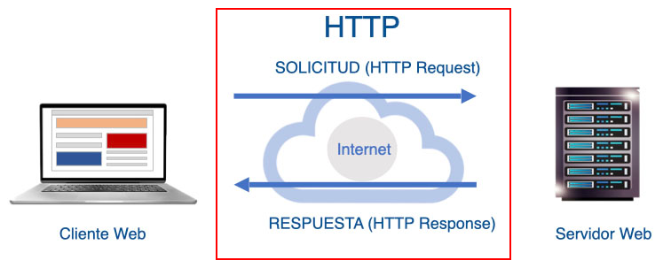
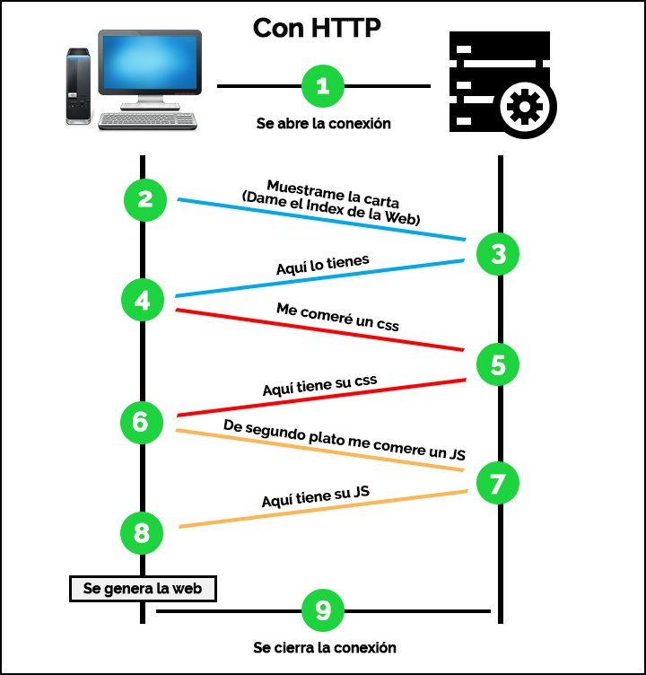
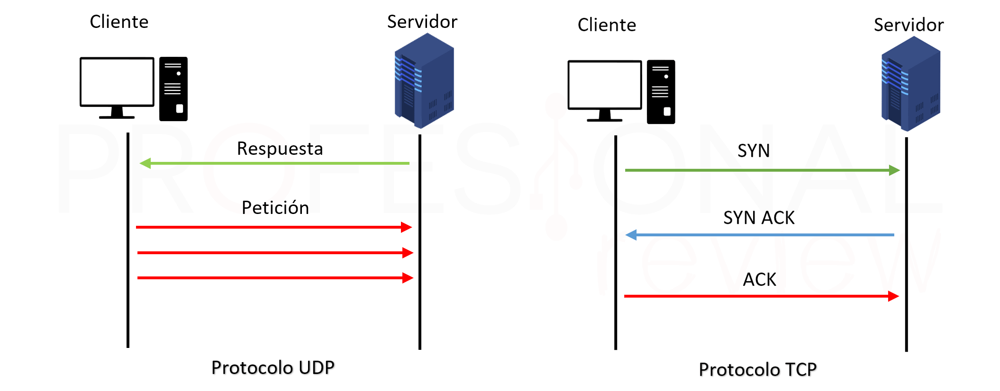

Respuesta: El protocolo HTTP/3 está montado sobre el protocolo binario QUIC
(el cual opera sobre UDP). Además, a nivel de formato, desde la versión HTTP/2
el propio protocolo pasó a estructurarse mediante un formato de frames (tramas)
binarias en lugar de texto plano.
Respuesta: Los clientes y servidores HTTP principales son:
Clientes HTTP más utilizados:
Navegadores web (como Chrome, Mozilla, etc.).
CURL (herramienta de línea de comandos para realizar peticiones HTTP).
Librerías nativas de diversos lenguajes de desarrollo (para realizar peticiones HTTP desde código).
Servidores / Entornos HTTP mencionados:
Servidor Web Apache (mencionado en las cabeceras de respuesta y ejemplos como Server: Apache/1.2).
Servidor web / Intérprete PHP (usado como intérprete del lado del servidor).
Tomcat (aclarando que no es un webserver tradicional, sino una Java Virtual Machine - JVM para interpretar código Java intermedio).
Respuesta: La línea inicial de un requerimiento admite los siguientes verbos o métodos principales:
GET: Utilizado para operaciones de solo lectura de un recurso.
POST: Utilizado normalmente para actualizar recursos o enviar datos de formularios/archivos en un servidor.
PUT: Utilizado para crear recursos en un servidor.
DELETE: Utilizado para borrar recursos en un servidor.
CONNECT: Método utilizado principalmente por los servidores proxy.
Respuesta: El body de un mensaje de requerimiento HTTP puede contener datos en cualquier formato.
Principalmente incluye:
Datos ingresados en campos de un formulario.
Archivos (files) enviados en un proceso de subida (upload).
Respuesta: La diferencia fundamental
es que la URI es la ruta específica y los parámetros del recurso dentro del servidor,
mientras que la URL es la dirección web completa que incluye el protocolo, el nombre de host/dominio,
el puerto y la propia URI.
Respuesta: La información relacionada con las respuestas HTTP
se almacena en el cliente a través de tres mecanismos principales: Cookies HTTP: Pequeñas piezas de
datos enviadas por el servidor mediante la cabecera Set-Cookie que el navegador guarda en memoria o
disco. Caché del navegador (HTTP Cache): Almacenamiento local de recursos (imágenes, archivos CSS,
JavaScript, etc.) para evitar descargarlos repetidamente. Archivos temporales de Streaming (HLS):
Fragmentos independientes de video o audio que se van guardando temporalmente en el navegador
durante una transmisión.
Respuesta: Significa que el cliente realiza múltiples transacciones y solicitudes de
recursos (requests) sobre una única conexión persistente ya abierta, solicitando elementos
de forma continua hasta el último recurso sin necesidad de volver a realizar el saludo de 3
vías de TCP por cada archivo. Esto se gestiona mediante la cabecera Connection: keep-alive.
Respuesta: Virtual Hosting (o alojamiento virtual) es la capacidad que tienen los servidores web
que corren sobre HTTP/1.1 para atender y hospedar múltiples dominios diferentes sobre una única
dirección IP pública.
Respuesta: El caché por ETag es un sistema de validación donde el servidor asocia
a cada archivo una etiqueta o finger print (identificador/hash) que cambia cada vez
que el recurso es modificado. El cliente almacena este identificador y lo reenvía en
el encabezado If-None-Match; si el ETag en el servidor no cambió, el servidor devuelve
una respuesta 304 Not Modified y el navegador carga el recurso directamente desde su caché local.
Respuesta: HTTP se considera un protocolo stateless (sin estado) porque trata cada
requerimiento como una transacción totalmente independiente y aislada: al completarse
la respuesta o al no haber más conexión abierta, el servidor no almacena ni recuerda el
contexto previo, por lo que cualquier aplicación pierde el estado entre peticiones sucesivas.
Respuesta: La versión que se implementó para mejorar la velocidad de transmisión de datos en la web
es HTTP/2 (funcionando desde 2015), mientras que la evolución más reciente para optimizar
la velocidad de conexión y recuperación en entornos con fallas o ruido es HTTP/3.
El comportamiento mejora mediante la adopción de HTTP/3 montado sobre el protocolo QUIC
(operando sobre UDP), el cual ofrece una gran capacidad de reconexión inmediata y
alta velocidad de recuperación frente a caídas causadas por ruido ambiente, exceso de
tráfico o baja calidad de cobertura.
En esta sección mostraremos imagenes representativas del protocolo HTTP.


